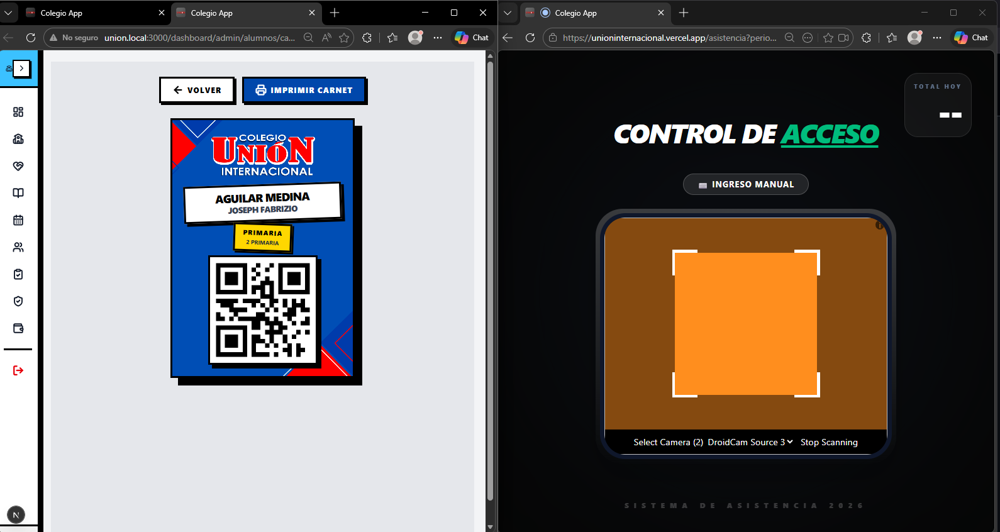

Descripción del Proyecto
Este sistema fue planteado como una solución digital para reemplazar el registro manual de asistencia dentro del entorno escolar. Cada estudiante dispone de un identificador QR único vinculado a su matrícula, permitiendo registrar entradas por curso, fecha y horario desde una interfaz web rápida e intuitiva.
El enfoque principal está en la automatización del control diario, la reducción de errores por duplicidad, la consulta de historiales en tiempo real y la administración centralizada de alumnos, docentes y secciones.
Funcionalidades Consideradas
- Registro de asistencia mediante escaneo de QR por estudiante
- Validación de alumno activo antes de registrar la marcación
- Control para evitar asistencias duplicadas en la misma fecha y curso
- Gestión de alumnos, grados, secciones y docentes
- Consulta de reportes diarios, semanales y por rango de fechas
- Panel administrativo con historial de asistencias
- Despliegue web continuo con integración entre GitHub y Vercel
- Persistencia de datos en PostgreSQL administrado desde Supabase
Vista General del Sistema

Escaneo del código QR del estudiante para registrar su asistencia.Arquitectura Tecnológica
Tecnologías Utilizadas
- Next.js
- TypeScript
- Supabase
- PostgreSQL
- Vercel
- GitHub
- HTML5 / CSS3
Código y Funcionamiento
Aquí puede integrarse una segunda vista con fragmentos representativos del proyecto, incluyendo el registro de asistencia por QR, consultas a Supabase, validaciones de duplicidad y lectura de reportes desde PostgreSQL.